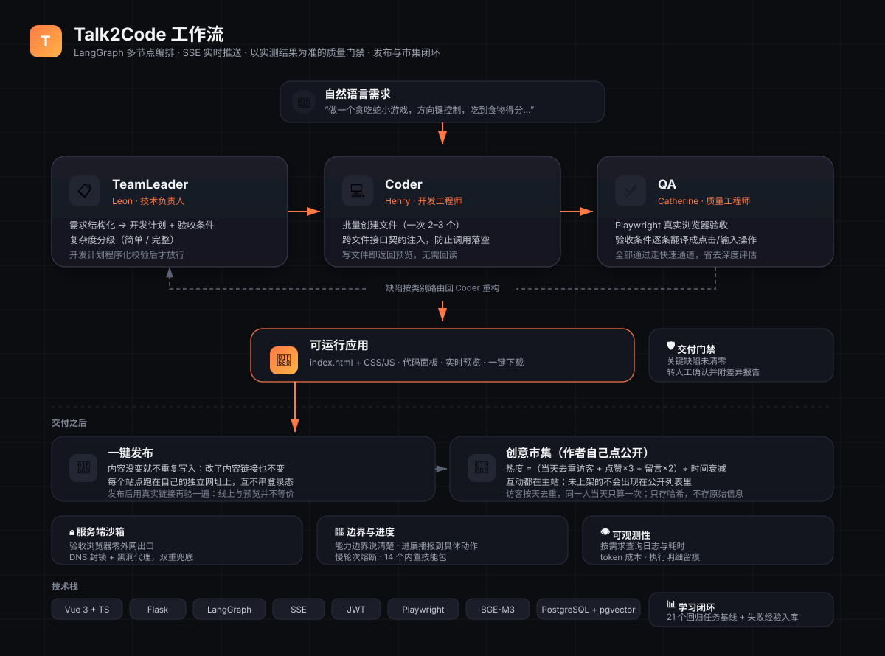

用一句话，
生成一个能跑、能发布、能被人看到的应用
输入自然语言需求 → 多智能体协同完成 需求分析 / 批量编码 / 真实浏览器验收 → 一键发布成可分享的独立网址，还可以上架创意市集。
60 秒看完整流程
从一句话需求，到验收通过、可以发给别人打开的应用——全程真实录屏，可复现。
流程说明：输入一句话需求 → 技术负责人拆解方案与验收条件 → 开发工程师批量产出文件 → 质量工程师在浏览器里逐条执行验收条件 → 评分放行 → 一键发布成可分享的网址。
不是一次生成了事，而是分工协作
LangGraph 编排三个智能体，职责分离、相互校验，把工程质量当成一等公民。
技术负责人
把一句自然语言需求拆成结构化方案与验收条件，判定复杂度等级，决定走快速通道还是完整流程。方案进编码前还要先过程序化校验。
开发工程师
批量创建文件，迭代轮数由文件数自适应决定；写入即返回内容预览，避免重复回读浪费上下文。写入前先拦掉预览环境里跑不起来的写法。
质量工程师
用 Playwright 在真实 headless Chromium 里逐条执行验收条件，全部通过走快速通道；没通过按缺陷类别打回重做，并附上根因说明。
不只是一份代码，是一条能被看到的链接
生成完不代表结束。产物可以直接变成一个可分享的网址，也可以摆到市集里给其他人逛。
一键发布
产物直接变成可分享的独立网址，发给同事、写进文档、贴到群里都能直接打开。改完再发，链接保持不变。
- 链接稳定：内容没变就不重复写入，分享出去的网址不会失效
- 互相隔离：每个站点跑在自己的独立域名上，不串登录态、互不影响
- 发布后再验一遍：用真实链接重跑一次验收，没通过就明确标注，不假装成功
创意市集
默认不公开，只有作者自己点了「公开」，作品才会出现在市集里。其他人可以浏览、点赞、留言，热度高的排前面。
- 你说公开才算数：把作品摆出来这件事，决定权始终在作者手上
- 热度更公平：同一个人当天只算一次，反复刷新不会把数字刷上去
- 互动都在主站：点赞和留言发生在主站，发布出去的页面只留一个跳转角标
交付前，先过工程质量这一关
多数工具止步于吐出代码片段；Talk2Code 要求生成结果能打开、能点、能用，才允许放行。
| 能力 | 做法 |
|---|---|
| ◆多智能体分工 | LangGraph 编排技术负责人 / 开发工程师 / 质量工程师，职责分离、相互校验，而不是一次生成了事 |
| ◆真机验收 | 质量工程师用 Playwright 在真实 Chromium 里逐条执行验收条件，以运行结果为准，而不是「看着像对的」 |
| ◆写入即拦截 | 写文件之前先拦掉在预览环境里跑不起来的写法，把问题挡在生成之前，不用等浏览器报错 |
| ◆跨文件接通 | 计划期声明导出清单 → 编码期注入接口契约 → 验收期比对全项目引用，保证模块之间真的接上，按钮不会点了没反应 |
| ◆方案先校验 | 开发计划进编码前先程序化校验：文件引用是否闭合、每个任务有没有明确目的、每条验收条件是否可执行 |
| ◆交付门禁 | 关键缺陷清零才放行；未达标则转人工确认，并附上未达成的验收条件清单与关键缺陷明细 |
| ◆缺陷自动回炉 | 验收没通过时按缺陷类别打回重构，架构类附带根因说明，修完再重新验一遍 |
| ◆说清能做什么 | 需要后端能力的需求，在澄清阶段就讲清能力边界，并给出照样能交付的替代方案，不让用户空等 |
| ◆进度看得见 | 进度播报到具体动作（「正在创建 js/app.js」「已完成 2/4」），静默超过 15 秒会显示已等待时长 |
踩过的坑，变成下一次的起点
工程质量不是靠一次性调提示词，而是靠一套会积累、会自我对照的机制。
跨会话经验
每次开工前先检索相关历史经验辅助编码，收工后自动沉淀关键模式供后续复用。成功与失败都记：失败经验带上警示标记，检索命中时提醒绕开同类问题。
21 个回归任务
固化的任务共 66 条断言，覆盖 ES Module、外部 CDN 依赖、跨文件引用、小游戏交互等真实场景。改核心逻辑前后各跑一次基线做对照，用数据判断这次改动到底更好还是更差。
CI 质量门禁
每次向主分支提交 PR 自动跑全量回归，并与黄金基线比对。一旦低于基线就判定质量回归，门禁直接失败，防止「这次改好了、那次又坏了」。
一条链路，看得清楚
前端实时呈现 Agent 思考与产出，后端用 LangGraph 编排，全程 SSE 流式回传；沙箱、边界、可观测性横切全程。

← 左右滑动查看完整架构图 →
四步跑起来
本地或服务器均可，配置好一个 LLM API Key 就能用；不装数据库会自动回退本地文件。
- 拉代码、装依赖克隆仓库，创建虚拟环境并安装后端依赖。
- 配置模型复制配置模板，填入你的 LLM API Key，兼容 OpenAI 与 Anthropic 两种协议。
- 起数据库（可选）用 Docker 起来，不装也能跑——会自动回退本地文件。
- 一键启动执行启动脚本，打开浏览器访问
localhost:5001即可。
# 1. 拉代码 + 装依赖 git clone https://github.com/WowCoder/talk2code.git cd talk2code python -m venv venv && source venv/bin/activate pip install -r backend/requirements.txt # 2. 配置模型（填入 LLM_API_KEY） cp backend/.env.example backend/.env # 3. 数据库（可选，不装会自动回退本地文件） docker compose up -d # 4. 一键启动 → http://localhost:5001 ./start.sh ✔ 服务已就绪，输入一句话需求试试
首次进入：执行 python manage.py demo init 创建演示帐号后，可免注册直接以演示模式只读体验；
或凭邀请码注册正式帐号（邀请码可在登录页申请）。
运营后台：入口 /admin/login，用 python manage.py admin create-user 创建管理员。